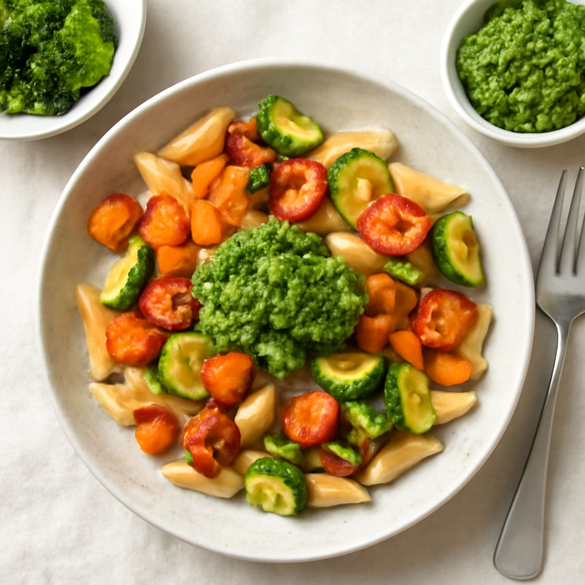

Tuesday — Roasted Vegetable Pasta with Pesto

Cook Time: 30 minutes
Method: Oven
PastaVegetablesPesto
Ingredients for 6
- 1 lb whole wheat pasta
- 2 zucchinis, chopped
- 2 bell peppers, chopped
- 1 cup cherry tomatoes
- 1 cup basil leaves
- 1/2 cup pine nuts
- 1/2 cup olive oil
- 2 cloves garlic
- Salt and pepper to taste
Instructions
- Preheat oven to 400°F (200°C).
- Toss zucchinis, bell peppers, and tomatoes with olive oil, salt, and pepper on a baking sheet.
- Roast vegetables for 20 minutes.
- Cook pasta according to package instructions.
- In a food processor, blend basil, pine nuts, garlic, olive oil, salt and pepper for pesto.
- Mix pasta with roasted vegetables and pesto before serving.
Toddler Notes
- Ensure vegetables are very soft; cut pasta into small pieces.
- Pesto should be spread thinly to avoid clumps.
← Back to weekly plan